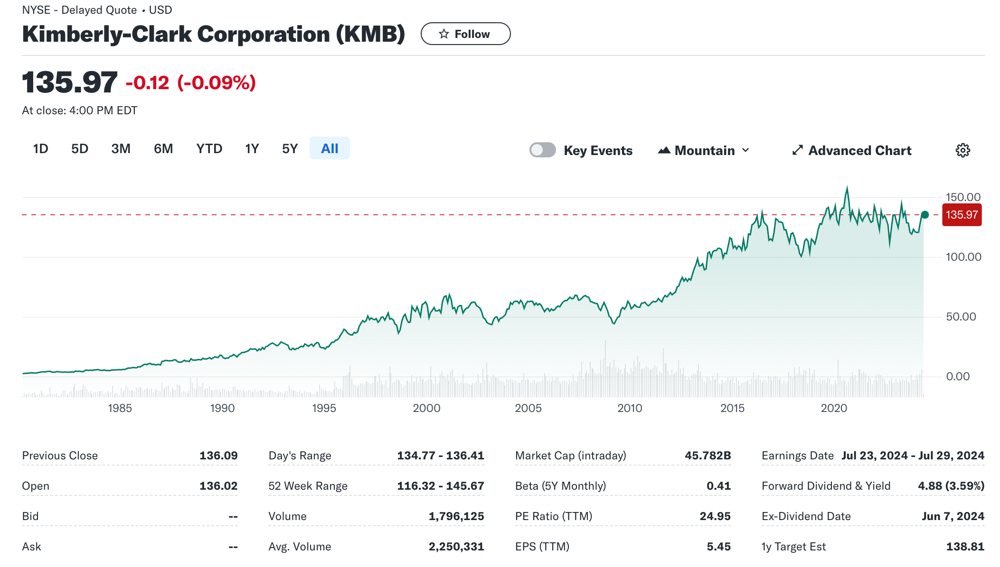

第1章 投资与估值概述
连贯案例
a
以下是来自金佰利中国对金佰利全球的介绍：
金佰利公司是全球健康卫生护理领域的引领者。公司成立于1872年，目前在全球有45000名雇员。个人健康护理用品、家庭生活用纸和商用消费产品是金佰利公司三大核心业务，2022年销售额逾202亿美元，产品销往超过175个国家和地区。
金佰利公司一直以完美质量、优质服务、公平相待而闻名，旗下众多产品品牌产品已经成为消费者日常生活中不可分割的一部分，并且相信这些产品将为他们的健康与生活带来更多的便利。金佰利在全球范围内拥有众多知名品牌，如Kleenex®舒洁®、Huggies®好奇®、Kotex®高洁丝®、Depend®得伴®、**Poise®蓓姿、Scott®适高®、Pull-Ups®和Andrex®等。
可以用几个代表性的产品来理解金伯利公司：纸尿裤，卫生纸，工业清洁用纸。
一些相关的国产竞品公司：babycare，恒安纸业，全棉时代（稳健医疗）。
b
根据investor day 2024的高管陈述，以下是万知AI的总结：
金佰利-克拉克公司（Kimberly-Clark）的未来战略包括几个关键组成部分：
- 市场聚焦和增长：公司计划专注于具有高增长潜力的市场，如中国。金佰利在中国市场取得的成功将被用作其他国际个人护理（IPC）市场的灯塔。公司希望通过提供更高品质的高端产品来吸引消费者，从而提高市场份额。
- 创新和产品开发：金佰利将继续投资于创新，以满足消费者的需求。公司已经开发出一种成功的模式，通过卓越的执行和针对每个本地市场的具体策略来赢得市场份额。此外，公司还将专注于减少成本，提高效率，并在产品组合中实现更高的价值。
- 组织结构和运营模式：金佰利将实施新的运营框架，包括三个高度集中的业务部门：北美、国际个人护理和家庭护理及专业部门。这种结构将确保公司能够利用全球规模，快速将创新产品推向市场，并减少运营中的复杂性和冗余。
- 财务目标：公司预计通过提高效率和减少成本，将在未来几年实现高个位数的营业利润和每股收益增长，以及每年至少20亿美元的现金流量。金佰利计划继续增加股息和回购股票，以实现对股东的持续回报。
- 供应链和生产效率：公司正在通过现代化的供应链、网络优化和数字化转型来提高效率和减少成本。这些措施预计将带来超过3亿美元的gross productivity savings和500万美元的working capital savings。
- 可持续发展：金佰利对可持续发展的承诺是公司战略的另一个重要方面。公司正在采取措施减少塑料和森林足迹，节约用水，减少气候相关排放，并计划到2030年实现自然森林零使用。
- 市场适应性和竞争优势：金佰利将通过增强对市场的适应性，提高投资回报率，并在全球范围内加快新产品的上市速度来增强其竞争优势。公司还将通过减少产品成本，增强客户关系的战略性质，以及在全球范围内实现约2亿美元的SG&A savings来提高效率。
综上所述，金佰利-克拉克公司的未来战略旨在通过创新、市场聚焦、组织结构优化和财务稳健来推动增长，同时保持对可持续发展的承诺。
我大致看了下他们高管的演讲，总体感觉非常之成熟，也可以说非常之八股，缺乏朝气，他们提到未来纸尿裤、卫生巾等等的市场还有多大的增长空间，我想这个空间未必能被KMB吃到，反而中国企业未来在第三世界国家可能有很大机会，卫生纸这个行业不够性感，但是中国的供应链能力可能是一个优势，如果有出海能力，值得关注。
c
KMB在进入21世纪之后收购活动很少，它在中国只有1994年有收购邯郸舒适美容集团（英语：Handan Comfort and Beauty Group）90%的股权的记录。
从最新的公司战略来看，其增长主要还是寄希望于产品创新，以及降本增效上，属于内生性增长。
d
根据最新的年报，AI解读：
金佰利公司的主要竞争对手包括全球、区域和当地制造商，包括私标制造商。这些竞争对手中，有些比金佰利公司更大、更多样化，他们在品牌认知和忠诚度、产品创新、质量和性能、价格以及营销和分销能力方面与金佰利公司展开竞争。此外，金佰利公司还面临着来自大型零售商、折扣店和电子商务零售商的压力，这些都对其销售和利润率产生了影响。特别是在卫生纸类别中，私标产品的市场份额有所增加，这可能会减少金佰利公司高利润产品的销售额，从而对其盈利能力产生负面影响。
以及网络检索总结：
根据搜索结果,金佰利公司的主要竞争对手包括:
- 宝洁公司(Procter & Gamble)[2] 金佰利的主要品牌高洁丝和舒洁在个人卫生和生活用纸领域长期占据领先地位,但宝洁公司旗下的产品如儿童纸尿裤等也给金佰利带来了竞争压力。
- 日本尤妮佳集团(Unicharm)[1] 尤妮佳是日本大型卫生用品公司,在纸尿裤、卫生巾等个人卫生用品领域是金佰利的主要竞争对手之一。
- 恒安国际集团(Hengan International)[1] 恒安国际是中国大型生活用纸企业,在卫生巾、纸巾等产品线上与金佰利存在直接竞争。
- 维达国际控股有限公司(Vinda International)[1] 维达国际是中国知名生活用纸制造商,其产品线与金佰利部分重叠,在中国市场上是金佰利的主要竞争者之一。
- 强生公司(Johnson & Johnson)[2] 强生公司在婴儿护理和个人卫生用品领域拥有知名品牌,如儿童纸尿裤等,与金佰利形成一定竞争。
因此,金佰利公司在全球个人卫生和生活用纸市场的主要竞争对手包括宝洁、尤妮佳、恒安国际、维达国际和强生等跨国公司。[1][2]
Citations: [1] https://www.nbd.com.cn/articles/2021-12-17/2045865.html [2] https://www.sohu.com/a/710369200_121123735 [3] https://www.fortunechina.com/ceocorner/c/2011-03/11/content_50962.htm [4] https://m.baike.com/wiki/%E9%87%91%E4%BD%B0%E5%88%A9%EF%BC%88%E4%B8%AD%E5%9B%BD%EF%BC%89%E6%9C%89%E9%99%90%E5%85%AC%E5%8F%B8/
其中恒安集团，港交所上市，代码01044，维达国际，港交所上市03331。
在中国，它的竞争对手包括国际巨头，中国本土行业巨头，也包括零售商的贴牌产品。
e
基于最新年报的总结：
金佰利公司面临多种风险，包括但不限于以下几点：
- 健康危机风险：文档中提到，金佰利公司可能面临与健康流行病、大流行和类似爆发相关的风险，这些风险可能对其业务、财务状况、运营结果和现金流量产生重大不利影响。
- 政治和法律风险：不利政治条件、政治不稳定和敌对、法律和法规变化、合同执行和知识产权保护难度加大，以及潜在的不利税收后果，都可能对公司的财务结果产生不利影响。
- 市场风险：金佰利公司运营和销售产品在全球范围内，因此面临包括货币汇率变化、货币限制和政治、社会和经济不稳定在内的国际市场风险。这些风险可能会对公司的财务结果产生不利影响。
- 竞争风险：金佰利公司面临来自多个市场的竞争对手，其中一些竞争对手可能比金佰利公司更大、更多样化。竞争包括品牌认知和忠诚度、产品创新、质量和性能、价格以及营销和分销能力等方面。
- 货币风险：金佰利公司的国际运营面临货币风险，包括货币汇率变化、货币限制和政治、社会和经济不稳定。这些风险可能会对公司的财务结果产生不利影响。
- 利率风险：金佰利公司通过组合固定和浮动利率债务，以及使用利率互换合约来管理利率风险。但无法保证公司能免受利率大幅波动的风险。
- 商品价格风险：金佰利公司面临原材料价格波动、供应链中断、资本和信贷市场中断、对方违约、未能实现预期收益或协同效应、无形资产减值以及公司对未来运营结果的预测错误等风险。
- 法律和监管风险：政府法规和执法、潜在的法律诉讼都可能对金佰利公司的财务结果产生不利影响。
这些风险因素可能会导致金佰利公司的未来结果与公司或其代表的任何前瞻性陈述中表达的结果不同。此外，公司可能面临其他未知的或目前认为不重要的风险，这些风险也可能会对公司的业务运营和财务结果产生不利影响。
我认为这不是一家风险很大的企业，首先所处的行业虽然竞争激烈，但是变化缓慢，其次这是一个成熟的跨国企业，全球市场有助于它分担风险。反过来说，这也不是一家有想象力的企业。
f

2010年，该公司股价从62.71美元涨到63.04美元（除权价），分红2.64美元，因此投资收益为：
(63.04-62.71+2.64)/62.71=4.74%
另外根据理杏仁网站分红再投资算法的测算，该公司上市至今年化投资收益率为7.44%，最近时间为6.02%，不是一个很好的标的。
当前(20240507)市盈率（TTM）为24.81，市净率43.85，市盈率正常，市净率特别高，所以ROE特别高，看起来主要是通过很高的资产负债率(93%)实现的。
g
针对表1-1的一些要点：
- 当前股价65.24美元
- 当前市盈率TTM 14.67
- 当前市值263.8亿美元
- 2011股利2.8美金，股息率4.30%
- 分析师评级均值2.6（1～5范围），相当于持有评级，也就是认为估值基本合理
- 未来一年目标价68.79美元，加上股息2.80美元，下一年预期回报率为
(68.79+2.8-65.24)/65.24=9.73% - 盈利预估方面，所有分析师的平均估计有时被称为一致估计。分析师之间的差异给出了关于未来收益的不确定性。
- 2011年每股收益预测4.98美元，2012年5.35美元
- 未来五年每股增长收益率预估9.10%
- 收入预测，2011年20.51B，2012年21.19B，增长3.32%。
- 预期市盈率
65.24/4.98=13.10 - PEG=预期市盈率/预期增长率=13.10/9.1=1.44
h
分析师认为评级合理。
i
这是一种似是而非的观点。回购是否合理主要取决于当前公司的股价是否低估，对公司（以及公司背后的股东）而言，买入自己股票就像买其他资产一样，它的收益率不仅取决于这个资产的分红，也取决于其价格波动。假设虽然股息率很高，但当前公司股价已经高估，未来股价会跌回正常价，则这种回购是对股东不利的，尤其是在回购的资金来源还是借款的情况下。按照该CFO的说法，只要提高分红，就可以显得回购的负债成本更低，这很荒谬。
j
实际2011年收入20.85B，2012年收入21.03B，和预估差别较小。
实际2011年每股收益4.02美元，2012年每股收益4.45美元，都低于预期。分析师过于乐观了。
实际2011年底股价70.53美元，2012年底股价80.95美元，涨幅比预期略高。
思考题
C1.1
基本面风险是企业经营的固有风险，上市公司和非上市公司都有这种风险，比如受经济周期的影响，阶段性的过冷和过热，也会受突发事件的影响，比如白酒塑化剂事件。价格风险是主要是针对上市交易的股票而言的，简单来说就是卖得太贵，基本面再好的企业，买得太贵，风险也很高。
C1.2
β技术衡量投资的风险以及风险所需的回报。资本资产定价模型（CAPM）是一种β技术；它衡量风险（β）和β所需的回报。α技术涉及识别定价错误的股票的技术，可以获得超过所需回报的回报（α回报）。
C1.3
这个论断是基于长期历史数据得来的，有两个问题，首先长期是多久？长期来说，我们都会死掉。如果我们买入的价格过高，这个长期可能是我们无法接受的；其次它说的是平均收益，如果我们过于自负的挑选股票，很可能达不到平均收益，这也从一个侧面说明了买指数基金是一个不错的策略。
C1.4
他们的主要区别在于是否相信市场是有效的，被动投资者相信市场始终是有效的，因此认为无需调查投资的价格是否合理，自己将获得和风险相符的正常回报，而主动投资者认为市场有时是无效的，需要调查投资的价格是否合理，并寻找错误定价的资产投资，获得超额收益。
C1.5
简单来看的话，收益率为10%时，合理的市盈率是10，这样市盈率33偏高，市盈率8偏低。但是实际情况更加复杂：
- 市盈率是当前价格除以当期利润，但是投资股票买的是未来，用当前外推未来，可能太乐观也可能太悲观
- 当期利润也可能被会计手法操纵，利润失真从而市盈率也失真
C1.6
从纯交易的角度，卖给公司还是卖给其他人都一样，都是以市场价出售。不过公司回购一般来说是发出一个信号，就是公司管理层认为当前的股价偏低，所以一般认为公司回购是利好，应该和公司一起买入，但仍然存在一些问题：
- 公司管理层的判断是错的，内部人士不一定就比外部人士看得更清楚
- 公司管理层欺骗性的回购，只是为了维护股价，达到某些目的
C1.7
基于两点理由，我认为价格依然是随机游走的：
- 每个投资者可获得的信息不一定一致，即使是一致的信息，可能也会基于不同的分析方法和分析角度得出不同的结论
- 新的信息的出现具有随机性
C1.8
价格会随机游走：
- 所有的人都不知道出价多少是合理的，因此实际上看起来的市场价是完全随机的
- 买入卖出的时间点是无法预测的
在这种情况下，如果基本面投资者太少，他也很难有把握等到自己想要的买入卖出价格，也就是说价值无法回归。
C1.9
a
在有效定价的时候，V是对P的一个良好的估计，如果出现偏差，可能是因为：
- 市场定价出现偏差，过于悲观或者过于乐观
- 对内在价值的估计有错误和偏差
b
在1995年之前，这是一个不错的策略，在1995年之后，比率一直上升，存在踏空的问题。这也提醒我们，做空和加杠杆的风险是很大的，市场可能长时间处于非理性状态。
c
原因是著名的千禧年互联网泡沫，市场对公司的定价基于无限乐观的前景，而忽视企业的实际盈利能力。
d
实际上就是，2000年后泡沫破灭了，这个比率再次回到1附近。
练习题
E1.1
市场价值等于股票市值加债务价值，共18亿美元。
E1.2
(27-9)/9=2
每股价值为2美金。
E1.3
(8.5+6.75)/0.25=61
估算股票价值为61美金，高于当前股价45美金，所以建议买入。
E1.4
一些中文财经媒体推荐。
E1.5
a
债权实际价值一般和账面价值一致，而股权价值则高于账面的股东权益，以市净率来体现。
债权价值： 1342.6+5542.5=6885.1
股权价值： 644.8*36.50=23535.2
企业市值： 6885.1+23535.2=30420.3
b
惠普公司是一家科技公司，持有的带息债券和存单投资应该视为融资活动，它不用于经营活动，理论上可以用来消减自己的债务。
债权价值： 8406+14512-12700=10218
股权价值： 2126*41=87166
企业市值： 10218+87166=97384
E1.6
a. 筹资活动
b. 经营活动
c. 经营活动
d. 筹资活动
e. 筹资活动
f. 经营活动
g. 研发支出分为费用化支出和资本化支出，费用化支出属于经营活动，资本化支出属于投资活动，产生无形资产。
h. 经营活动
i. 投资活动
j. 经营活动
迷你案例
a
2004年利润 160*0.26%=41.6
2004年市值 41.6*24=998.4
假设折现率为10%，则1999年市值应为 998.4/(1+10%)^5=61.993
1999年股价应为 61.993/1.1=56.36
b
假设折现率为10%，则理想的2004年市值应为 1155*(1+10%)^5=1860.14
市盈率为 1860.14/41.6 =44.7，该市盈率低于50，因此购买是值得的。
c
- 问题一：存在循环论证，基于比较随意的市盈率，预测了未来的价格，反过来证明当前价格是合理的
- 问题二：未来的收入和利润真的有这么高么？高增长是可维持的么？
- 问题三：美国在线的故事可靠吗？未来会被其他形态的公司取代吗？它的收入结构会一直如此吗？